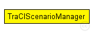
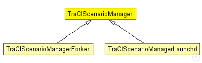

This documentation is released under the Creative Commons license
This documentation is released under the Creative Commons license(no description)
The following diagram shows usage relationships between types. Unresolved types are missing from the diagram.
The following diagram shows inheritance relationships for this type. Unresolved types are missing from the diagram.
| Name | Type | Description |
|---|---|---|
| TraCIScenarioManagerForker | simple module |
Extends the TraCIScenarioManager to automatically fork an instance of SUMO when needed. |
| TraCIScenarioManagerLaunchd | simple module | (no description) |
| Name | Type | Default value | Description |
|---|---|---|---|
| connectAt | double | 0s |
when to connect to TraCI server (must be the initial timestep of the server) |
| firstStepAt | double | -1s |
when to start synchronizing with the TraCI server (-1: immediately after connecting) |
| updateInterval | double | 1s |
time interval of hosts' position updates |
| moduleType | string | "org.car2x.veins.nodes.Car" |
module type to be used in the simulation for each managed vehicle |
| moduleName | string | "node" |
module name to be used in the simulation for each managed vehicle |
| moduleDisplayString | string | "*='i=veins/node/car;is=vs'" |
module displayString to be used in the simulation for each managed vehicle display strings key-value pairs needs to be protected with single quotes, as they use an = sign as the type mappings. For example *.manager.moduleDisplayString = "'i=block/process'" *.manager.moduleDisplayString = "a='i=block/process' b='i=misc/sun'" moduleDisplayString can also be left empty: *.manager.moduleDisplayString = "" |
| trafficLightModuleType | string | "" |
module type to be used in the simulation for each managed traffic light |
| trafficLightModuleName | string | "tls" |
module name to be used in the simulation for each managed traffic light |
| trafficLightFilter | string | "" |
filter string to select which tls shall be subscribed, list sumo IDs separated by spaces |
| trafficLightModuleDisplayString | string | "i=misc/node2;is=vs;r=0,,#707070,1" |
module displayString to be used in the simulation for each managed traffic light |
| host | string | "localhost" |
server hostname |
| port | int | 9999 |
server port (-1: automatic) |
| seed | int | -1 |
seed value to set in launch configuration, if missing (-1: current run number) |
| autoShutdown | bool | true |
Shutdown module as soon as no more vehicles are in the simulation |
| margin | int | 25 |
margin to add to all received vehicle positions |
| roiRoads | string | "" |
which roads (e.g. "hwy1 hwy2") are considered to consitute the region of interest, if not empty |
| roiRects | string | "" |
which rectangles (e.g. "0,0-10,10 20,20-30,30) are considered to consitute the region of interest, if not empty. Note that these rectangles have to use TraCI (SUMO) coordinates and not OMNeT++. They can be easily read from sumo-gui. |
| penetrationRate | double | 1 |
the probability of a vehicle being equipped with Car2X technology |
| ignoreGuiCommands | bool | false |
whether to ignore all TraCI commands that only make sense when the server has a graphical user interface |
| order | int | -1 |
specific position in the multi-client execution order of the TraCI server to request upon connecting (-1: do not request a position) |
| ignoreUnknownSubscriptionResults | bool | false |
whether to (try and) ignore any subscription result we did not request (but another client might have) |
| Name | Value | Description |
|---|---|---|
| display | i=block/network2 | |
| class | veins::TraCIScenarioManager |
| Name | Type | Unit |
|---|---|---|
| org_car2x_veins_modules_mobility_traciTimestepBegin | simtime_t | |
| org_car2x_veins_modules_mobility_traciTimestepEnd | simtime_t | |
| org_car2x_veins_modules_mobility_traciInitialized | bool | |
| org_car2x_veins_modules_mobility_traciModulePreInit | cModule | |
| org_car2x_veins_modules_mobility_traciModuleAdded | cModule | |
| org_car2x_veins_modules_mobility_traciModuleRemoved | cModule |
simple TraCIScenarioManager { parameters: @display("i=block/network2"); @signal[org_car2x_veins_modules_mobility_traciInitialized](type=bool); @signal[org_car2x_veins_modules_mobility_traciModulePreInit](type=cModule); @signal[org_car2x_veins_modules_mobility_traciModuleAdded](type=cModule); @signal[org_car2x_veins_modules_mobility_traciModuleRemoved](type=cModule); @signal[org_car2x_veins_modules_mobility_traciTimestepBegin](type=simtime_t); @signal[org_car2x_veins_modules_mobility_traciTimestepEnd](type=simtime_t); @class(veins::TraCIScenarioManager); double connectAt @unit("s") = default(0s); // when to connect to TraCI server (must be the initial timestep of the server) double firstStepAt @unit("s") = default(-1s); // when to start synchronizing with the TraCI server (-1: immediately after connecting) double updateInterval @unit("s") = default(1s); // time interval of hosts' position updates string moduleType = default("org.car2x.veins.nodes.Car"); // module type to be used in the simulation for each managed vehicle string moduleName = default("node"); // module name to be used in the simulation for each managed vehicle // module displayString to be used in the simulation for each managed vehicle // display strings key-value pairs needs to be protected with single quotes, as they use an = sign as the type mappings. For example // <pre> // *.manager.moduleDisplayString = "'i=block/process'" // *.manager.moduleDisplayString = "a='i=block/process' b='i=misc/sun'" // </pre> // // moduleDisplayString can also be left empty: // <pre> // *.manager.moduleDisplayString = "" // </pre> string moduleDisplayString = default("*='i=veins/node/car;is=vs'"); string trafficLightModuleType = default(""); // module type to be used in the simulation for each managed traffic light string trafficLightModuleName = default("tls"); // module name to be used in the simulation for each managed traffic light string trafficLightFilter = default(""); // filter string to select which tls shall be subscribed, list sumo IDs separated by spaces string trafficLightModuleDisplayString = default("i=misc/node2;is=vs;r=0,,#707070,1"); // module displayString to be used in the simulation for each managed traffic light string host = default("localhost"); // server hostname int port = default(9999); // server port (-1: automatic) int seed = default(-1); // seed value to set in launch configuration, if missing (-1: current run number) bool autoShutdown = default(true); // Shutdown module as soon as no more vehicles are in the simulation int margin = default(25); // margin to add to all received vehicle positions string roiRoads = default(""); // which roads (e.g. "hwy1 hwy2") are considered to consitute the region of interest, if not empty string roiRects = default(""); // which rectangles (e.g. "0,0-10,10 20,20-30,30) are considered to consitute the region of interest, if not empty. Note that these rectangles have to use TraCI (SUMO) coordinates and not OMNeT++. They can be easily read from sumo-gui. double penetrationRate = default(1); //the probability of a vehicle being equipped with Car2X technology bool ignoreGuiCommands = default(false); // whether to ignore all TraCI commands that only make sense when the server has a graphical user interface int order = default(-1); // specific position in the multi-client execution order of the TraCI server to request upon connecting (-1: do not request a position) bool ignoreUnknownSubscriptionResults = default(false); // whether to (try and) ignore any subscription result we did not request (but another client might have) }
This documentation is released under the Creative Commons license